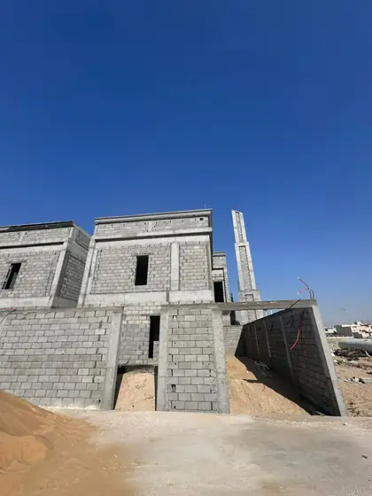

يظن بعض الملاك أن استلام بناء العظم يعني التجول في المبنى بعد انتهاء العمال والتأكد بصريًا من اكتماله. لكن كثيرًا من عناصر الجودة أصبحت في تلك اللحظة خلف الخرسانة أو الردم أو العزل أو المباني. لذلك يبدأ الاستلام الحقيقي من نقاط الفحص السابقة، ثم يجمع نتائجها في حزمة إقفال واضحة قبل دخول فرق التأسيس والتشطيب.
الغرض ليس إصدار شهادة عامة بأن كل شيء جيد، بل الإجابة عن أربعة أسئلة: هل نُفذ النطاق المتفق عليه؟ هل أُغلقت الملاحظات وفق مستندات المشروع؟ هل جُمعت السجلات والاختبارات والتغييرات؟ وهل أصبحت الجبهات جاهزة ومسؤوليتها واضحة للمرحلة التالية؟
استخدم قائمة فحص جودة العظم أثناء المراحل، ثم طبّق هذه القائمة للإقفال. ويبقى قبول العناصر الفنية من مسؤولية المختصين المعينين للمشروع وفق المخططات والمواصفات والعقد.
1. ثبّت تعريف الاستلام وحدوده التعاقدية
راجع العقد لتعرف هل المطلوب استلام مرحلة، أو استلام ابتدائي لنطاق العظم، أو تسليم جبهة لطرف تالٍ، وما المستندات التي تسبق كل حالة. قد تكون هناك أعمال مستثناة أو مؤجلة مثل السور أو الخزان أو العزل أو بعض المباني؛ لا تخلطها بنقص تنفيذي إذا كانت موثقة، ولا تعتبرها منجزة إذا بقيت ضمن النطاق.
اكتب قائمة بنود العقد وحالتها: منجز، تحت الفحص، عليه ملاحظة، مؤجل باعتماد، أو خارج النطاق. هذه القائمة تمنع عبارة «العظم انتهى» من إخفاء عناصر صغيرة ستعطل التشطيبات أو تسبب مطالبة مالية لاحقة.
2. راجع سجل الفحوصات قبل الحالة البصرية
ابدأ بمحاضر ونماذج الفحص المرتبطة بالحفر والأساسات والتسليح والشدات والصبات والردم والعزل والمباني والأعمال المخفية حسب المشروع. تأكد من أن الملاحظات المسجلة لها إغلاق أو إجراء معتمد، وأن نتائج الاختبارات مرتبطة بالعنصر والتاريخ وليست ملفات منفصلة بلا سياق.
إذا غاب سجل عمل أصبح مخفيًا، لا تخترع قبولًا من صورة عامة. اطلب من المسؤولين تحديد ما يلزم للتحقق ضمن الممكن، وسجل حدود المعلومات المتاحة. الإقفال الصادق يوضح ما تم إثباته وما لم يمكن إثباته بدل إعطاء طمأنينة غير مدعومة.
- طلبات الفحص ومحاضر الاستلام لكل نقطة توقف معتمدة.
- تقارير المواد والاختبارات مرتبطة بالصبة أو المنطقة والعنصر.
- سجل عدم المطابقة والمعالجة وإعادة الفحص والإغلاق.
- صور مؤرخة ومحددة الموقع للأعمال التي أصبحت مخفية.
3. افحص المحاور والمناسيب والفتحات كواجهات للتشطيب
راجع مع المختصين المحاور والأبعاد والمناسيب والفتحات والسلالم ومواقع الجدران مقارنة بالمستندات المعتمدة. الهدف ليس إعادة تصميم المبنى في الجولة، بل اكتشاف أي فرق سيؤثر في الأبواب أو النوافذ أو الأرضيات أو الأسقف أو الواجهات قبل أن تبدأ القياسات والتصنيع.
ثبّت منسوبًا مرجعيًا واضحًا للفرق التالية، وحدد أماكن الفتحات والسليفات والأجزاء المدفونة. إذا احتاج فرقًا أو تعديلًا، يصدر القرار قبل إخفائه باللياسة. أخطاء الواجهات هنا تتحول سريعًا إلى قص ألمنيوم أو اختلاف أرضيات أو تعارض أثاث.
المحاور
مواضع الجدران والعناصر وعلاقتها بالمساحات والارتدادات.
المناسيب
مرجع للأرضيات والدرج والفتحات والأسقف والمداخل.
الفتحات
أبعاد ومواقع وتجهيزات مناسبة للتخصص أو المنتج التالي.
4. راجع الخرسانة والمباني والأسطح الظاهرة
يُفحص المظهر العام للعناصر وما سجل أثناء التنفيذ، وتُحدد أي تعشيش أو شروخ أو انحراف أو ضرر أو إصلاح سابق ليراجعه المختص المسؤول. لا تصدر حكمًا إنشائيًا من العرض البصري وحده، ولا تسمح بتغطية حالة محل سؤال قبل توثيقها واعتماد الإجراء المطلوب.
في المباني راجع المواقع والمناسيب والفتحات والاستقامة والربط والتقاء المواد بحسب التفاصيل، مع حالة الأسطح التي ستستقبل اللياسة أو العزل أو التركيبات. قائمة الملاحظات يجب أن تحدد المكان بالصور أو الشبكة أو الغرفة حتى يستطيع الفريق إغلاقها وإعادة فحصها.
5. أغلق العزل والأعمال المدفونة وحدود MEP
راجع سجلات العزل والحماية والاختبارات قبل الردم أو الإغلاق، وحالة النقاط التي ما زالت ظاهرة. ثم طابق السليفات والفتحات والمسارات المدفونة مع مخططات الكهرباء والسباكة والتكييف المتاحة. أي نقطة ناقصة يجب أن تحسم قبل أن تبدأ طبقات التشطيب أو معدات التخريم.
حدد أيضًا حدود المسؤولية: ما الذي نفذه مقاول العظم للتخصصات؟ وما الذي يستلمه مقاول MEP؟ ومن يعالج فتحة أو مسارًا غير مطابق؟ وثيقة تسليم الجبهة تقلل تبادل الاتهام عندما تبدأ الفرق الجديدة.
- استلام العزل والاختبارات والحماية قبل التغطية بحسب النظام.
- قائمة السليفات والفتحات والأجزاء المدفونة وما تم تصويره.
- تسليم نقاط الخدمات والمسارات المرجعية للفرق التالية.
- مسؤولية إصلاح أي نقص أو ضرر بعد تاريخ تسليم الجبهة.
6. أنشئ قائمة ملاحظات قابلة للإغلاق
لا تكتب «مراجعة جميع الجدران» أو «إصلاح الخرسانة» كبند واحد. امنح كل ملاحظة رقمًا وموقعًا ووصفًا ومرجعًا وصورة ومسؤولًا وتاريخًا مستهدفًا وحالة. صنفها حسب أثرها: تمنع بدء التشطيب، تحتاج قرارًا فنيًا، أو يمكن إغلاقها ضمن فترة محددة دون تعطيل الجبهة.
بعد تنفيذ الإجراء، لا يغلق المقاول ملاحظته بنفسه دون آلية مراجعة متفق عليها. سجل نتيجة إعادة الفحص، ومن وافق، وما إذا بقيت متابعة لاحقة. هذا السجل يخدم الاستلام المالي أيضًا لأنه يربط الدفعة بحالة الأعمال بدل تقدير عام.
حرجة للانتقال
تمنع التغطية أو بدء فريق آخر حتى الإغلاق.
تحتاج قرارًا
لا تبدأ معالجتها قبل تقييم واعتماد المختص.
تنظيمية
مستند أو تنظيف أو حماية أو وسم يمكن إقفاله بموعد واضح.
7. سلّم حزمة إقفال تربط الموقع بالعقد
تجمع حزمة الإقفال قائمة النطاق والكميات أو المستخلص النهائي للمرحلة، والتغييرات المعتمدة، وسجلات المواد والفحوصات والاختبارات، وقائمة الملاحظات المغلقة والمفتوحة، والمخططات المحدثة المتاحة، وأي تعليمات حماية أو متابعة. لا يشترط أن تكون الحزمة ضخمة؛ المهم أن تكون مفهرسة ويمكن فهم علاقتها بالموقع.
اعقد اجتماع تسليم مع ممثلي المرحلة التالية، وسجل حالة الجبهات والأعمال المتبقية ومناطق التخزين والحماية. ثم طابق الإقفال مع جدول دفعات بناء العظم والعقد قبل اعتماد القيمة النهائية أو تحرير أي ضمانات وفق الاتفاق.
مشروعك يقترب من نهاية مرحلة العظم؟
أرسل نطاق العقد والمخططات وحالة التنفيذ لتحديد المستندات والنقاط المطلوبة قبل مناقشة الاستلام أو المرحلة التالية.
طلب استشارة أو عرض سعرالخلاصة
استلام بناء العظم في الرياض لا يختصر في جولة أو توقيع. يبدأ من سجلات الفحوصات، ثم يراجع النطاق والمحاور والمناسيب والفتحات والخرسانة والمباني والعزل والأعمال المدفونة، ويغلق الملاحظات وحزمة الإقفال وحدود التسليم للتشطيبات. عندما يتطابق الموقع مع السجل والعقد، تصبح المرحلة التالية أقل عرضة للمفاجآت والتكسير والخلاف.
تابع أدلة بناء العظم
انتقل إلى الدليل المحوري أو الأدلة المرتبطة، ثم إلى الخدمة عندما تصبح جاهزًا للتنفيذ.